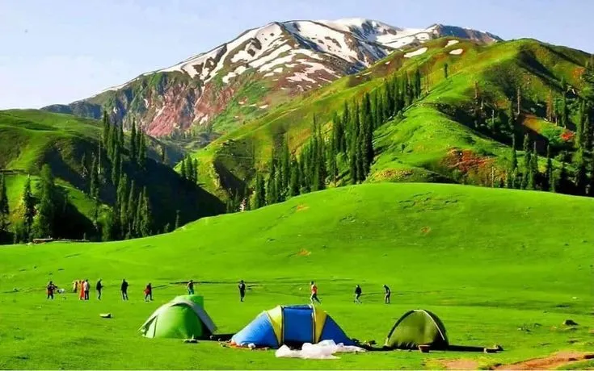

A serene Himalayan plateau with 360° mountain views — ideal for family escapes, photography, and trekking in the heart of Kaghan Valley, KPK.

Shogran is a beautiful highland meadow located in the Kaghan Valley of Mansehra district, KPK. Situated at approximately 2,362 meters above sea level, it offers a breathtaking 360° panoramic view of the surrounding Himalayan peaks including Makra Peak, Musa ka Musalla, and Siri Paye meadows beyond.
Shogran is a favorite among Pakistani families due to its easy accessibility, comfortable hotels, and stunning natural beauty. The plateau is covered with green meadows and pine forests, offering a refreshing escape from the summer heat.
Shogran is one of the most family-friendly destinations in northern Pakistan. The road to Shogran requires a jeep (available for hire in Kiwai village), and there are good hotels and guesthouses at the top with stunning views. The climate is cool and pleasant throughout summer.
Whether you're looking for a family weekend or a photography adventure, our Shogran tour packages have you covered.